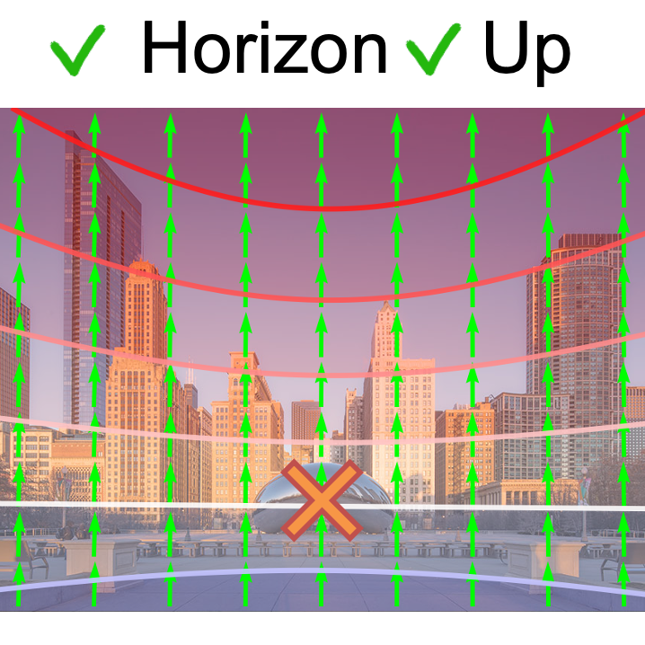
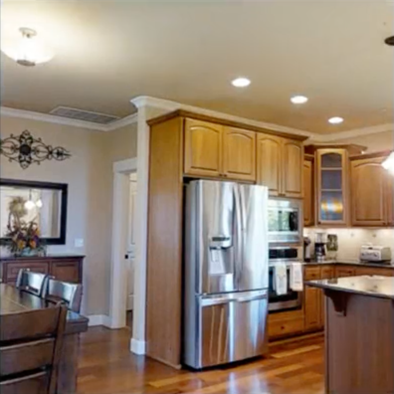
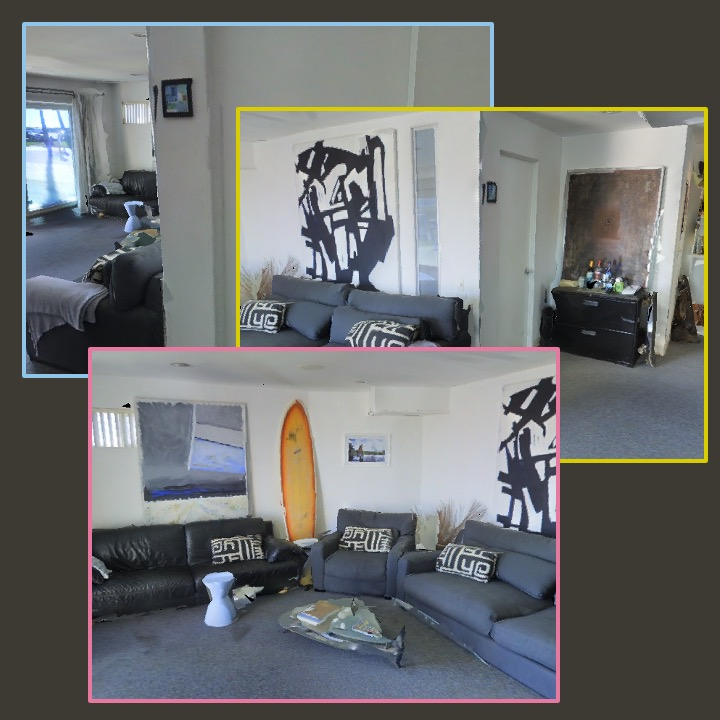
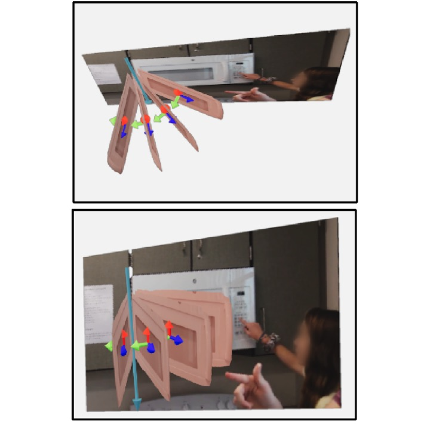
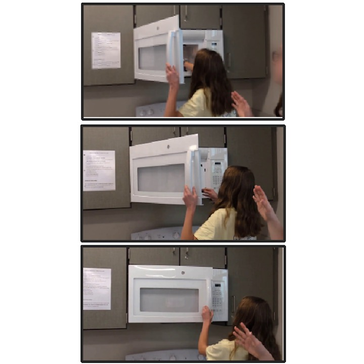
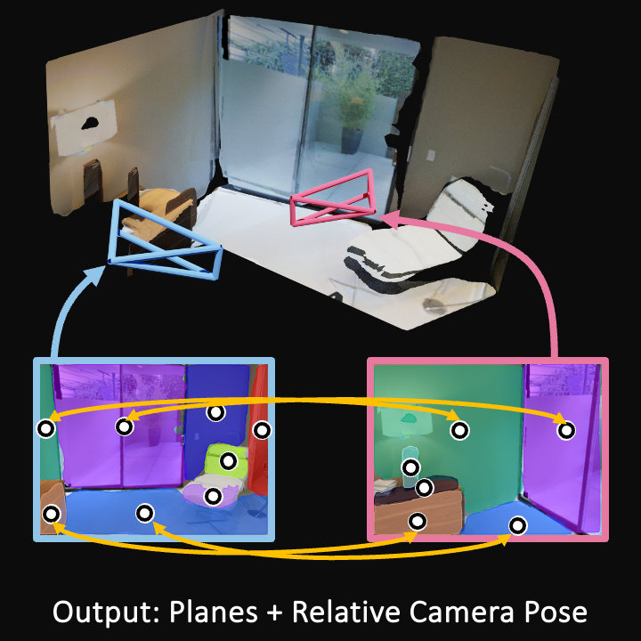
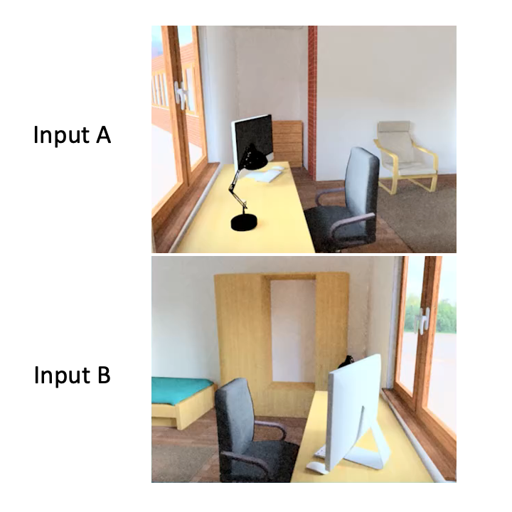
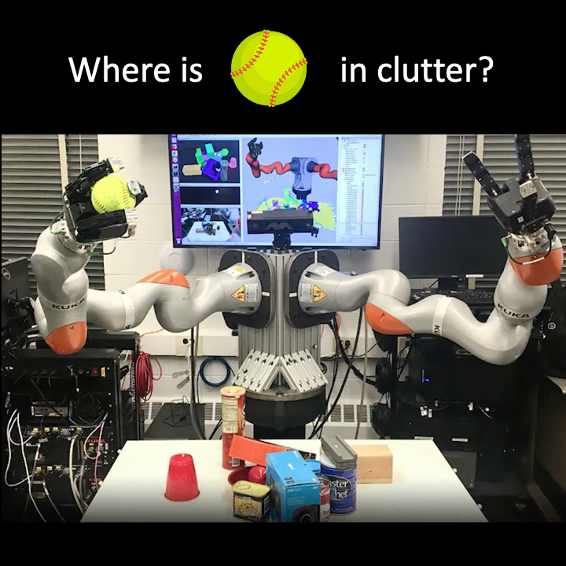
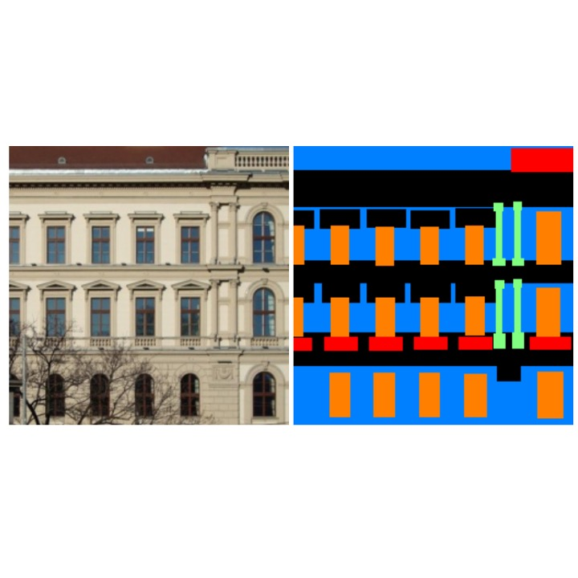

|
Linyi Jin I am a third-year Ph.D. student at the University of Michigan, advised by Prof. David Fouhey. I work on computer vision and machine learning. My research is related to 3D scene understanding, camera calibration and robotics. I was previously a Master student in Robotics. Before that, I received my B.S.E. degrees in Computer Science at UM and Mechanical Engineering at Shanghai Jiao Tong University through a dual degree program at UM-SJTU Joint Institute. I am looking for internship position in 2024. Please feel free to contact me if you think I’d be a good match! Email / CV / Google Scholar / Github |
News
- [2023/09] I will be a visiting student at |
 since David is moving there!
since David is moving there! {kind=link}
Work Experience |
|
Adobe Research
Computer Vision Research Intern Summer, 2019 Host: Jianming Zhang |
Publications |
|

|
Perspective Fields for Single Image Camera Calibration.
Linyi Jin, Jianming Zhang, Yannick Hold-Geoffroy, Oliver Wang, Kevin Matzen, Matthew Sticha, David Fouhey CVPR, 2023 (Highlight -- 2.5% accept rate) project page / demo / arXiv / code / bibtex A novel image space representation for camera perspectives, facilitating precise calibration in in-the-wild environments and cropped images. |
|

|
Learning to Predict Scene-Level Implicit 3D from Posed RGBD Data.
Nilesh Kulkarni, Linyi Jin, Justin Johnson, David Fouhey CVPR, 2023 project page / arXiv / code / bibtex Learning 3D implicit function from a single input image. Unlike other methods, D2-DRDF does not depend on mesh supervision during training and can directly operate with raw RGB-D data obtained from scene captures. |
|

|
PlaneFormers: From Sparse View Planes to 3D Reconstruction.
Samir Agarwala, Linyi Jin, Chris Rockwell, David Fouhey ECCV, 2022 project page / arXiv / code / bibtex We introduce a simpler approach that uses a transformer applied to 3D-aware plane tokens to perform 3D reasoning. This is substantially more effective than SparsePlanes. |
|


|
Understanding 3D Object Articulation in Internet Videos.
Shengyi Qian, Linyi Jin, Chris Rockwell, Siyi Chen, David Fouhey CVPR, 2022 project page / arXiv / code / bibtex We propose to investigate detecting and characterizing the 3D planar articulation of objects from ordinary videos. |
|

|
SparsePlanes: Planar Surface Reconstruction from Sparse Views.
Linyi Jin, Shengyi Qian, Andrew Owens, David Fouhey ICCV, 2021 (Oral) project page / arXiv / code / bibtex We learn to reconstruct scenes from sparse views with an unknown relationship. We take advantage of planar regions and their geometric properties to recover the scene layout. |
|

|
Associative3D: Volumetric Reconstruction from Sparse Views.
Shengyi Qian*, Linyi Jin*, David Fouhey ECCV, 2020 project page / arXiv / code / bibtex We can build a voxel-based reconstruction of images from two views, even without access to the relative camera positions. Invited presentation at ECCV 2020 Workshop Holistic Scene Structures for 3D Vision. |
|

|
Inferring Occluded Geometry Improves Performance when Retrieving an Object from Dense Clutter.
Andrew Price*, Linyi Jin*, Dmitry Berenson ISRR, 2019 project page / arXiv / bibtex We augment a manipulation planner for cluttered environments with a shape completion network and a volumetric memory system, allowing the robot to reason about what may be contained in occluded areas. |
Teaching |
|  |
EECS 442 Computer Vision (Winter '19)
IA with David Fouhey. |
|
This website uses template from Jon Barron. |